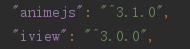
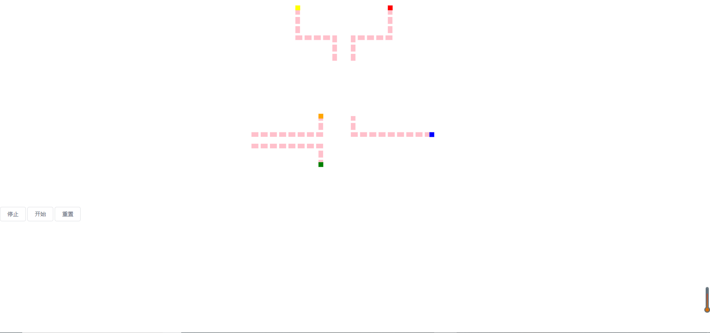

在画路径图之前，首先得在package.json引入2个依赖

废话不多说，直接上代码
1 <style>
2 .green {
3 position: absolute;
4 }
5
6 .blue {
7 position: absolute;
8 }
9
10 .yellow {
11 position: absolute;
12 }
13
14 .red {
15 position: absolute;
16 }
17 .orange {
18 position: absolute;
19 }
20 .path {
21 width: 300px;
22 height: 150px;
23 stroke: pink;
24 stroke-width: 10;
25 stroke-dasharray: 15, 5;
26 fill: transparent;
27 display: block;
28 position: absolute;
29 }
30
31 .article {
32 display: flex;
33 flex-direction: column;
34 position: relative;
35 width: 100%;
36 min-height: 8rem;
37 margin-bottom: 1rem;
38 padding: 1rem;
39 }
40 </style>
41 <template>
42 <div>
43 <section style="display: flex;
44 flex-direction: column;
45 position: relative;
46 width: 100%;
47 max-width: 30rem;
48 margin: auto;
49 text-align: center;">
50 <article class="article">
51 <svg version="1.1" class="svg" height="400px">
52 <!--下右下-->
53 <path d="M100 0 L 100 65 , 180 65,180 115" class="path"/>
54 <path fill="none" stroke="" d="M95 -5 L 95 60,175 60,175 110" id="yellow"/>
55 <!--下左下-->
56 <path d="M300 0 L 300 65 , 220 65,220 115" class="path"/>
57 <path fill="none" stroke="" d="M295 -5 L 295 60,215 60,215 110" id="red"/>
58 <!--下左-->
59 <path d="M0 275 L 150 275 , 150 235" class="path"/>
60 <path fill="none" stroke="" d="M145 230 L 145 270,-5 270" id="orange"/>
61 <!--上左-->
62 <path d="M0 300 L 150 300 , 150 340" class="path"/>
63 <path fill="none" stroke="" d="M145 335 L 145 295,-5 295" id="green"/>
64 <!--左上-->
65 <path d="M390 275 L 220 275 , 220 235" class="path"/>
66 <path fill="none" stroke="" d="M385 270 L 215 270 , 215 230" id="blue"/>
67 </svg>
68 <div class="yellow" style="background-color: yellow;width: 10px;height: 10px"></div>
69 <div class="red" style="background-color: red;width: 10px;height: 10px"></div>
70 <div class="orange" style="background-color: orange;width: 10px;height: 10px"></div>
71 <div class="green" style="background-color: green;width: 10px;height: 10px"></div>
72 <div class="blue" style="background-color: blue;width: 10px;height: 10px"></div>
73 </article>
74 </section>
75 <Button @click="stop">停止</Button>
76 <Button @click="start">开始</Button>
77 <Button @click="reset">重置</Button>
78 </div>
79 </template>
80
81 <script>
82 import anime from 'animejs'
83
84 export default {
85 data () {
86 return {
87 yellow: undefined,
88 red: undefined,
89 orange: undefined,
90 green: undefined,
91 blue: undefined
92 }
93 },
94 methods: {
95 stop () {
96 const self = this
97 self.yellow.pause()
98 self.red.pause()
99 self.orange.pause()
100 self.green.pause()
101 self.blue.pause()
102 },
103 start () {
104 const self = this
105 self.yellow.play()
106 self.red.play()
107 self.orange.play()
108 self.green.play()
109 self.blue.play()
110 },
111 reset () {
112 const self = this
113 self.yellow.reset()
114 self.red.reset()
115 self.orange.reset()
116 self.green.reset()
117 self.blue.reset()
118 }
119 },
120 mounted () {
121 const self = this
122 let yellowPath = anime.path('#yellow')
123 let redPath = anime.path('#red')
124 let orangePath = anime.path('#orange')
125 let greenPath = anime.path('#green')
126 let bluePath = anime.path('#blue')
127 self.yellow = anime({
128 targets: '.yellow',
129 // 沿着路径对象的x值
130 translateX: yellowPath('x'),
131 // 沿着路径对象的y值
132 translateY: yellowPath('y'),
133 easing: 'linear',
134 duration: 10000,
135 loop: true
136 })
137 self.red = anime({
138 targets: '.red',
139 // 沿着路径对象的x值
140 translateX: redPath('x'),
141 // 沿着路径对象的y值
142 translateY: redPath('y'),
143 easing: 'linear',
144 duration: 10000,
145 loop: true
146 })
147 self.orange = anime({
148 targets: '.orange',
149 // 沿着路径对象的x值
150 translateX: orangePath('x'),
151 // 沿着路径对象的y值
152 translateY: orangePath('y'),
153 easing: 'linear',
154 duration: 10000,
155 loop: true
156 })
157 self.green = anime({
158 targets: '.green',
159 // 沿着路径对象的x值
160 translateX: greenPath('x'),
161 // 沿着路径对象的y值
162 translateY: greenPath('y'),
163 easing: 'linear',
164 duration: 10000,
165 loop: true
166 })
167 self.blue = anime({
168 targets: '.blue',
169 // 沿着路径对象的x值
170 translateX: bluePath('x'),
171 // 沿着路径对象的y值
172 translateY: bluePath('y'),
173 easing: 'linear',
174 duration: 10000,
175 loop: true
176 })
177 self.blue.pause()
178 self.yellow.pause()
179 self.red.pause()
180 self.orange.pause()
181 self.green.pause()
182 }
183 }
184 </script>通过以上代码，最终可以生成如下图所示，点击开始，点就会跟着模拟路径跑，流动方向请看代码注释。
